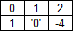
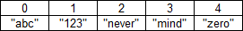
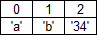

Programming Questions
The following programming questions will test if you are ready for the next level. This tutorial introduced you to the basic principles of computer programming - flow charts, variables, data types, operators, conditions, loops, arrays.
The test contains both - theoretical questions and problems to solve. Write down your answers for each question. When you complete the test you can verify the answers with each lesson from the tutorial.
One last note - this is not school and I don't write grades. Answer honestly. If you can't answer it is probably better to leave it empty and read the corresponding lesson again. On the other hand don't aim for 100%. 90% is still excellent and enough to move on ;).
Do you learn better from video?
Learn faster with deeper understanding! |
 |
Flow charts:
First we start with questions about flow charts in programming - the blocks that we use to compose the algorithms.
1. What is the shape of:
a) begin/end
b) action (statement)
c) decision
d) input/output
2. How many outputs could have the element:
a) begin
b) end
c) action
d) input/output
e) decision
3. In what symbol you will write:
a) Begin
b) Input: number of clients
c) i++
d) p = A / t
e) i < N
f) End
g) count % 2 == 0
h) output: counter is odd
i) Array[4] = Array2[3] + count
Data types
Programming questions about the basic data types. In real world we use many others, but these are enough for the beginners' tutorial.
1. What values we keep in a boolean variable?
2. We enclose some values in special characters. What symbol we
use for:
a) the character type
b) the string type
3. What is a literal? Give example for
a) integer literal
b) real number
c) boolean
d) character
e) string
4. Can we increment a variable of character type? Why?
Variables
1. What characters are allowed in the name of a variable?
2. Can a variable name start with
a) a small letter
b) a capital letter
c) a dot '.'
d) a number
e) an underscore
3. Which variables have good and correct names?
a) count
b) MIN_VALUE
c) o
d) m1nu73
e) 1_names
d) 2Names
f) numberOfRecords
g) QuerriedFields
h) TheMost_Recent_NumberOfQueries
Mathematical operators programming questions
1. What is an operand?
2. What operator we use to:
a) sum numbers
b) subtract numbers
c) multiply
d) divide
e) take the remainder from a division
3. What is the short version equivalent of:
a) number = number + 3
b) divider = divider / 2
c) counter = counter – 1
d) power = power * 4
4. What is the result of the following:
a)
n = 5;
m = n++;
m = ?, n = ?
b)
count = 0;
count2 = --count;
count = ?, count2 = ?
c)
number = 4;
divider = 1;
divider *= ++number;
number = ?, divider = ?
d)
thruth = 5 > 4;
lie = 5 < 4;
result = (truth != lie)
truth = ?, lie = ?, result = ?
Logical operators
1. What is the result
a) true && true
b) true && false
c) false || false
d) false || true
e) true ^ true
f) true ^ false
g) !false ^ true
h) !(true && false)
Loops programming questions
1. What is the purpose of the loop's condition?
2. What is the difference between a pre-condition and post-condition loop? Is it true that the body of a post-condition loop may not be executed even once?
3. What are nested loops in programming?
4. Two loops are nested. The outer loop counts from 1 to 10 and the inner – from 1 to 5. How many times the body of the inner loop will be executed?
Arrays programming questions
1. What is an array?
2. What is the purpose of the index of an array?
3. Can the index take negative values?
4. What is the lowsest possible value of the index?
5. What is the highest possible value of the index for an array with N elements?
6. Can we change the size of an array after we created it?
7. What is wrong with the following arrays?
|
a) numbers[3] |

|
|
b) strings[4] |

|
|
c) chars[3] |

|
2D Arrays
1. Could the number of rows be different from the number of columns in a 2D array?
2. What is a square matrix? Describe some of its interesting features.
3. Note that concerning arrays the programming questions are limited to one and two dimensional arrays. Although there is no limit on the number of dimensions, 3 and more are almost never used. Just to test your imagination... visually how would you represent the values of an array with 3 dimensions? And 4 ;) ?
Practice
Once you finished the theoretical programming questions, take a short break and then continue with the algorithms below. Remember - the knowledge becomes long-term when you practice. The more tasks you solve - the better.
Create an algorithm that:
1. outputs all odd numbers from 1 to 200
2. finds if a given number is prime. A prime number can be divided without reminder only by 1 and by the number itself. Example for prime numbers 7, 13, 23.. Let the user input the number to be tested.
3. Finds all prime numbers between 100 and 1000
4. finds n! (n factorial). For example 4! = 1 * 2 * 3 * 4.
5. finds nm – user inputs n and m. Ex 23 = 2 * 2 * 2
6. searches a character array for the first element by lexicographical order.
7. Sorts an array of characters by lex. Order
8. finds the sum of the smallest and the biggest numbers in the array numbers[N, M]
9. Given is a boolean array[N, M] that contains information about servers. Each row is a separate server and each column is a given characteristic. Check whether all servers are online (first column), any server is in error state(second column), there is more than 20% free disk space on every server (the last column).
10. Check whether a white knight can attack a black pawn. You have their coordinates on the chess board (WKr, WKc, BPr, BPc). By chess rules, the knight can attack (see the picture). It "jumps" to the final field. The knight attacks only the destination square and the attack will not be interrupted if there are other pieces between the knight and the destination.
11. Checks if a black pawn can be promoted into Queen in one move. By chess rules, the black pawns are promoted if they reach the first line. The pawns move by one square on vertivcal. The destination must be unoccupied. The pawn can also take an enemy piece by one square in a diagonal direction.
12. For a given square matrix (NxN), output the values in the
following order
First column – lowest index to highest index
Second column – highest index to lowset
Third column - lowset to highest index
etc.
|
Previous: Multidimensional arrays |
Next: C programming tutorial |
Do you learn better from video?
Learn faster with deeper understanding! |
|
C Programming › Beginners' tutorial › Tutorial quiz
Tutorial Contents:
1)Learn
Computer Programming
2)Software Development Process
3)Flow
Chart
4)Flow
Chart Symbols
5)Data
Type
6)What is a variable
7)Math
Operators
8)Logical
Operators
9)Loops
10)Nested Loops
11)Arrays
12)Multidimensional arrays
13)Programming Questions
|
Did this help? Support me with your vote ;-) |
|
|
|
Did this help? |
|
|